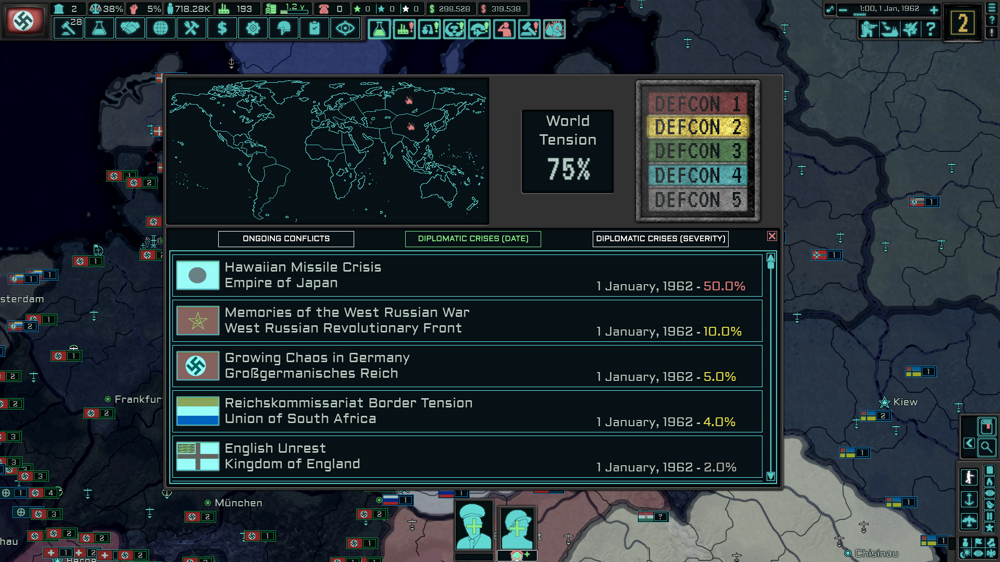
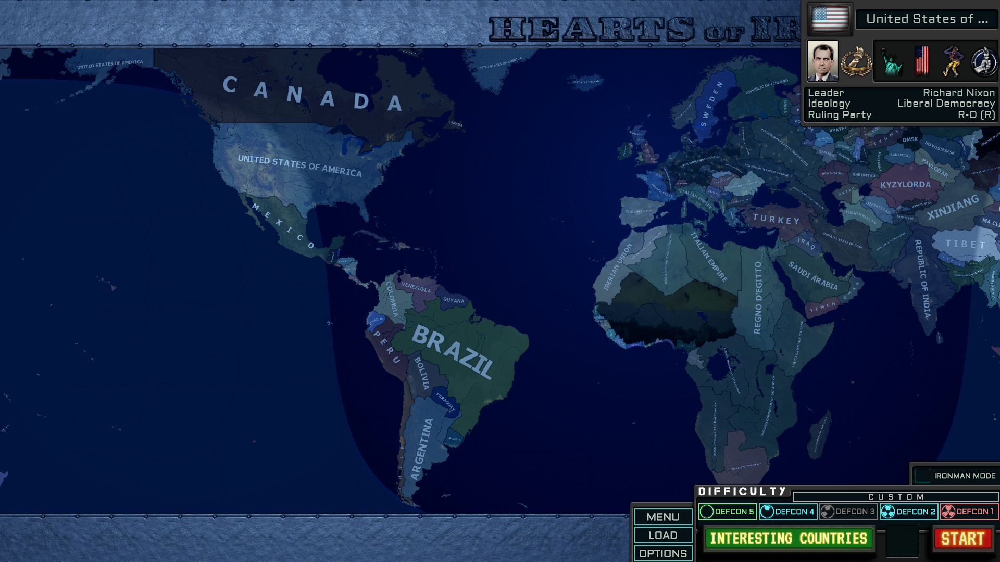
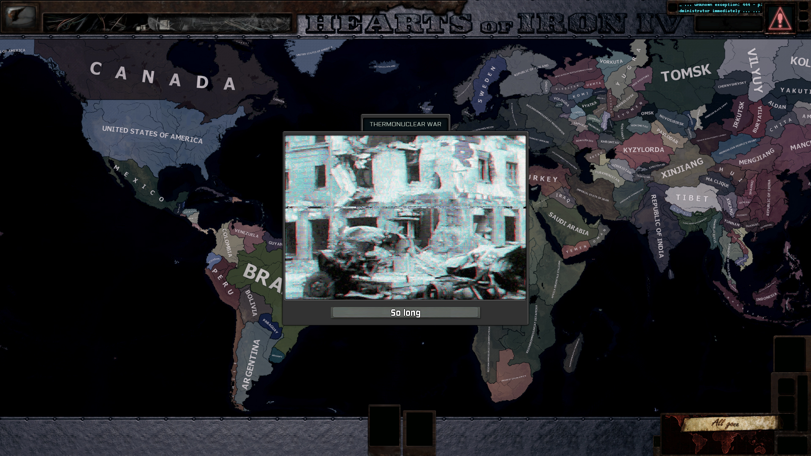

The New Order: Last Days of Europe

The New Order: Last Days of Europe или в просторечии TNO — мод к четвертой части Hearts of Iron, успевший побывать в разработке для Виктории 2. Очередная альтернатива на тему «что, если бы Ось победила во Второй Мировой войне»? Если кратко, то предыстория такова — сперва Оси везло без перерыва — поражение Рузвельта на баллотировании в президенты, крах Сталина в борьбе за власть, гибель Мао и Чан Кайши в совместной обороне Китая от японцев и непрерывные победы Оси, питающие нелепого колосса германской экономики. А в 50е, когда «Гитлер перерезал ленточку на открытии Гибралтарской дамбы» получилась реальность.
В результате получился мир, искореженный победой нацизма. Экономика Германии лежит в руинах, откатившись к рабовладельческой формации, раздавленная амбициозными проектами, нелепым управлением и чрезмерно раздутой армией, а сама Германия ждет смерти обожаемого фюрера, что бы устроить четырехстороннюю гражданскую войну за власть — причем за спиной каждого кандидата маячат ребята, которые еще хуже (кроме Бормана, он сам себе злобный буратино с МБР). Советский союз мертв и частично поделен, а частично развалился сам, а еле теплящиеся очаги цивилизации ежедневно бомбардируются летчиками Люфтваффе. Проект Атлантропы вместо процветания убил экономики средиземноморских держав, лишив их портов и гаваней — в результате чего жертвы вышли из Оси и организовали Триумвират против Германии, который также дышит на ладан. Сферу Сопроцветания трясет от восстаний, а в самой Японии армия, флот и мегакорпорации грызутся за власть. Нацизм не осужден и не ввергнут в грязь, в результате чего многочисленные нацисты являются не бандами маргиналов, а способными взять власть ублюдками и что хуже всего — есть куда более радикальные сторонники фашистских идей — последователи Гиммлера и его «Бургундской Системы». Массовые гражданские протесты сотрясают мир от Ванкувера до Гонолулу и почти каждый из них готов перерасти в массовые побоища и гражданские войны. Даже в сравнительно благополучных США вопрос гражданских прав радикализирует общество, а некоторые кандидаты в президенты только и мечтают о том, как бы вернуть сегрегацию. Игра начинается в 1962 году, когда нацистская Германия водрузила флаг на Луне, Сопротивление в Англии провалило Вторую битву за Лондон, а…долго перечислять.
Мод, в отличие от оригинальной игры более заточен под внутреннюю политику и экономику, а также делает очень большой упор на сюжетную линию, вплоть до сравнений с визуальной новеллой. Экономика игры была переработана почти полностью, была прописана масса внутренних событий.


